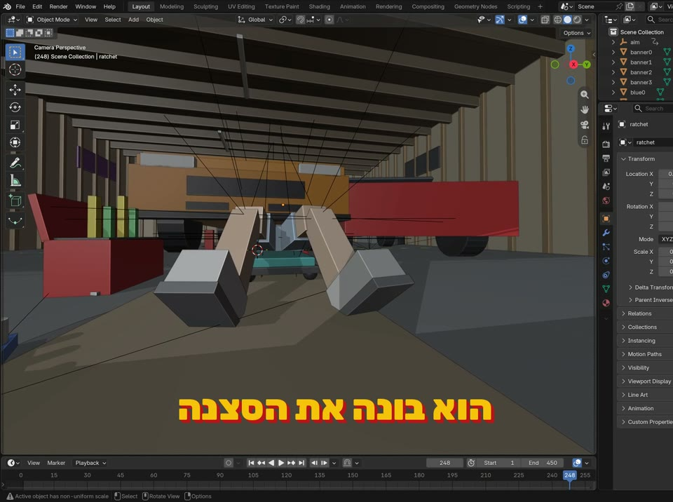
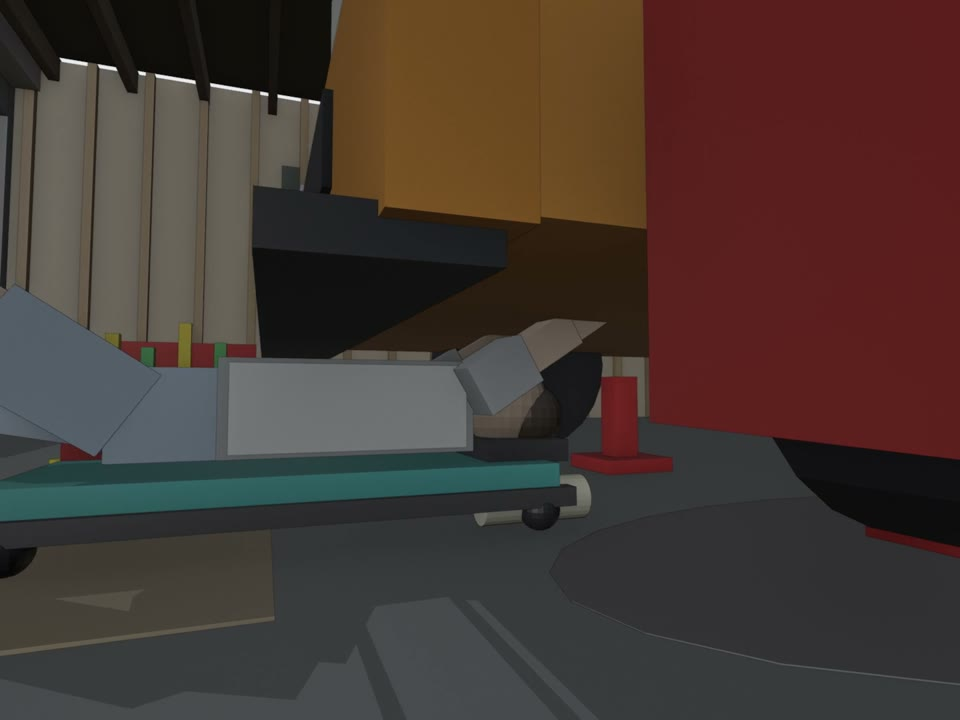
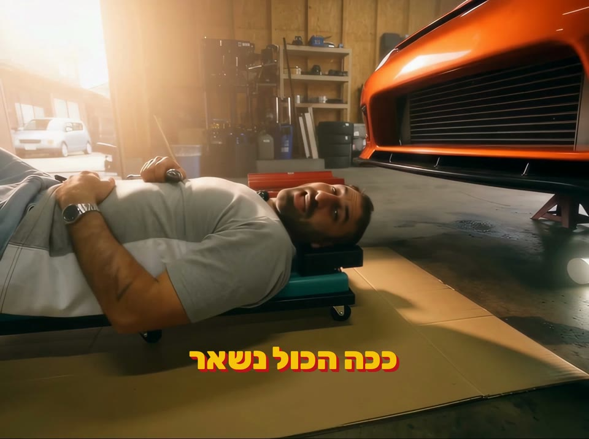
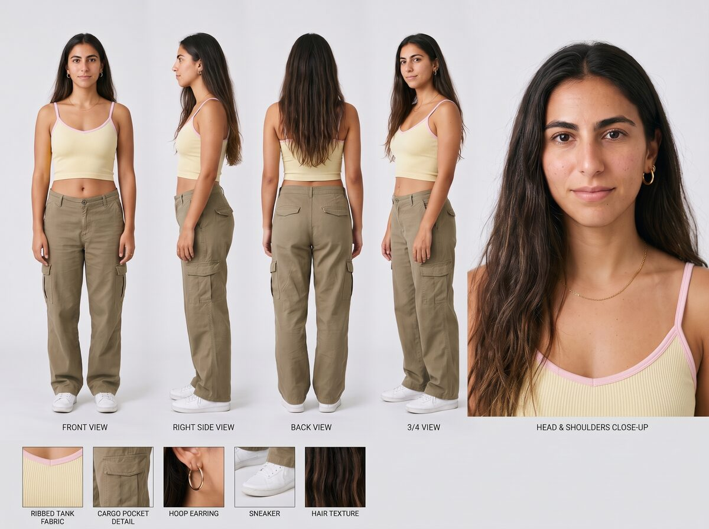
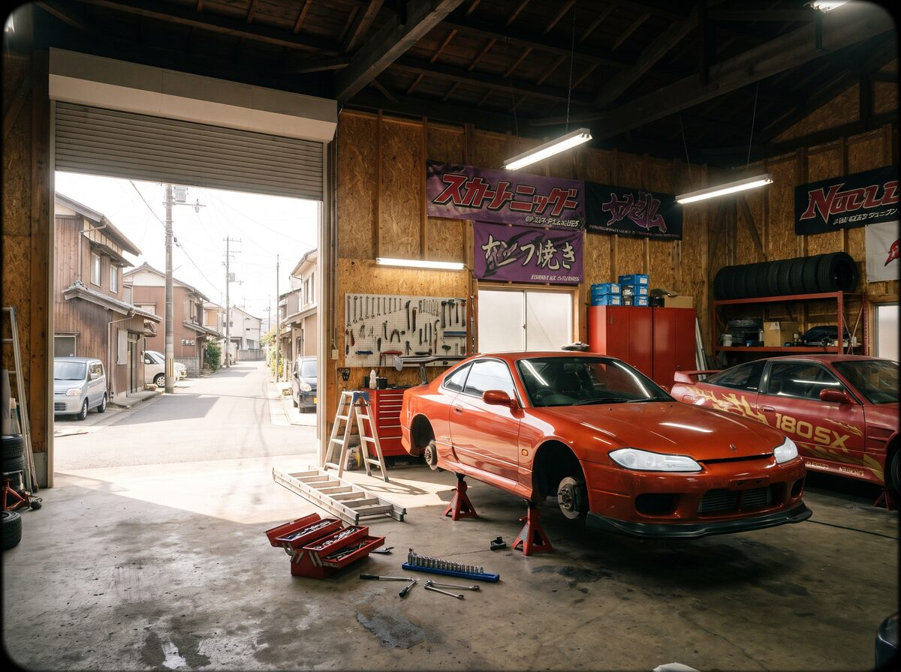
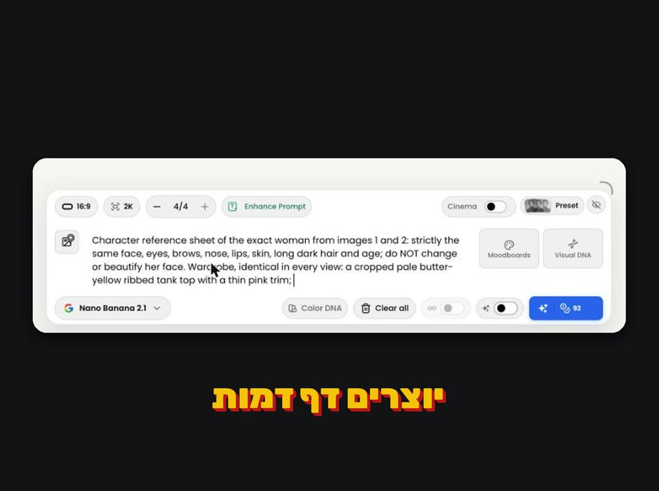
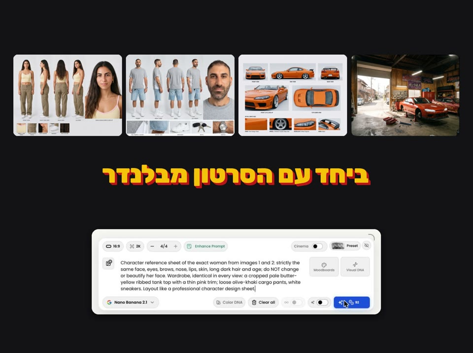

Claude בונה את הסצנה בבלנדר, אתם קובעים בדיוק איפה המצלמה ומה קורה בכל שנייה, וסידאנס 2.5 בקולבו הופך את הבובות לאנשים אמיתיים. גם אם בחיים לא פתחתם תוכנת תלת־ממד. הנה כל השלבים, עם כל הפרומפטים.
כשנותנים ל-AI רק טקסט, הוא מנחש את המצלמה ואת התזמון. כשנותנים לו סרטון מבלנדר, הכול נשאר בדיוק במקום והוא רק הופך את זה לאמיתי.
בפרומפט כותבים שהבובות מסמנות רק איפה כל אחד עומד. אחרת האנשים בסרטון זזים נוקשים, כמו הבובות.
אם בבלנדר המצלמה זזה ב-6.6, גם בפרומפט כותבים 6.6. מספר אחר מבלבל אותו.
לכל תמונה ולסרטון שורה משלהם: מה לקחת ממנו ומה לא. בלי זה הוא מערבב בין הדמויות.
בלנדר היא תוכנת תלת־ממד חינמית. מורידים אותה מהאתר הרשמי ומתקינים כרגיל. לא צריך לדעת להשתמש בה, את כל העבודה בפנים Claude עושה.
החיבור נעשה עם BlenderMCP, תוסף חינמי שנותן ל-Claude לבנות ולהזיז דברים בתוך בלנדר. הכי פשוט: מבקשים מ-Claude שיחבר את עצמו ויסביר לכם מה ללחוץ.
תחבר את עצמך לבלנדר דרך BlenderMCP (https://github.com/ahujasid/blender-mcp). 1. תתקין את מה שצריך בצד שלך ותוסיף את השרת של blender-mcp להגדרות שלך. 2. תסביר לי צעד אחרי צעד איך מתקינים את התוסף בתוך בלנדר ואיך לוחצים Connect. 3. כשהחיבור עובד, תבדוק שאתה רואה את הסצנה שפתוחה אצלי ותגיד לי מה יש בה.

זה כל הסוד. Claude בונה את המקום מקופסאות ובובות, ואתם מחליטים בדיוק איפה המצלמה, מי עומד איפה ומה קורה בכל שנייה. ככה ה-AI לא צריך לנחש כלום. אחרי הרינדור צופים, מבקשים תיקונים במילים, ומרנדרים שוב עד שהתנועה נכונה.
תבנה לי בבלנדר סצנה של 15 שניות, יחס 4:3, 30 פריימים לשנייה. המקום: מוסך קטן. רכב ספורט כתום מורם על ארבע חמורים אדומים, ומאחוריו רכב אדום. דלת גלילה פתוחה לרחוב. ארגז כלים אדום פתוח על הרצפה ליד הפגוש, וקרטון על הרצפה מתחת לרכב. רק צורות פשוטות: קופסאות לרכבים ולקירות, בובה אחת לבן אדם. כל דבר בצבע שונה, כדי שיהיה ברור מה זה מה. מה קורה בכל שנייה: 0-0.7 המצלמה צמודה לרצפה ליד החמור הקדמי. הבן אדם שוכב על עגלת מכונאי מתחת לרכב, הידיים על הפגוש. 0.7-2.3 הוא מתגלגל החוצה, והמצלמה גולשת לאחור יחד איתו ונעצרת מהצד. 2.3-6.6 הוא מסובב את הראש למצלמה ומדבר. המצלמה כמעט לא זזה. 6.6-7.3 הוא חוזר מתחת לרכב, רק הרגליים בחוץ. המצלמה מסתובבת מהר לחזית הרכב, נמוך. 7.3-8.6 נמוך מול הרכב, דחיפה איטית פנימה. 8.6-11.0 המצלמה עולה מהר לזווית גבוהה ליד הכנף הקדמית ומסתכלת למטה על הרגליים. 11.0-12.6 יורדת שוב לחזית, נמוך. 12.6-15.0 עולה למעלה, מבט ישר מלמעלה, ונעצרת. המצלמה היא זרוע רובוטית: כל מעבר הוא קשת חלקה עם עצירה קטנה בסוף, ואף פעם לא קאט. לפני שאתה מרנדר תבדוק ארבעה דברים: שהמצלמה לא עוברת דרך הרכב או דרך הבובה, שהרגליים של הבובה על הרצפה, שאף יד לא נכנסת לתוך הרכב, ושכל תנועת מצלמה גדולה לוקחת לפחות חצי שנייה. תרנדר עם Workbench לקובץ MP4 ותראה לי.


נכנסים לקולבו, בוחרים Nano Banana Pro בעריכת תמונה, מעלים תמונה אחת או שתיים של האדם ומדביקים את הפרומפט. יוצא דף אחד עם הדמות מכל הצדדים, הבגדים והפרטים. ככה הפנים והבגדים נשארים זהים בכל הסרטון. מחליפים בפרומפט רק את תיאור הבגדים.
Character reference sheet of the exact woman from images 1 and 2: strictly the same face, eyes, brows, nose, lips, skin, long dark hair and age; do NOT change or beautify her face. Hair long, loose and natural. Wardrobe, identical in every view: a cropped pale-blue ribbed tank top with thin straps; loose olive-khaki cargo pants sitting low on the hips; small gold hoop earrings and one thin gold necklace; white low-top sneakers. Detail swatches: ribbed tank fabric, cargo pocket, hoop earring, sneaker, hair texture. Realistic photographic style, not illustrated or 3D rendered. Clean light grey seamless studio background, soft even daylight. Layout like a professional character design sheet, horizontal 4:3: on the left, four full-body views standing in a row at the same scale (front, right side, back, three-quarter turning toward camera); on the right, one large head-and-shoulders close-up looking into the lens; along the bottom, a strip of small detail swatches of the outfit (fabric texture, shoes, hair, accessories). Small plain labels under each view. Natural skin with visible pores and fine texture, no smoothing, no beauty filter. 35mm film look, fine grain. No other writing, no logos.

עוד תמונה אחת, של המקום בלי אנשים: האור, הצבעים, החומרים. היא לא קובעת איפה מה עומד, את זה קובע הסרטון מבלנדר. היא רק אומרת לסידאנס איך המקום אמור להיראות.
A wide eye-level photo taken from inside a cramped Japanese drift garage in late-morning daylight, 4:3 framing, 24mm lens. The roll-up door on the left is fully open to a quiet residential Japanese street with two-storey houses and a utility pole with sagging wires, bright and slightly overexposed. Centre-right, a late-90s Nissan Silvia S15 coupe in glossy red-orange sits nose toward the door, raised on four red jack stands with its wheels just off the floor; a black rear wing, white headlights, a dark front grille and a black front lip. Behind it to the right, a red 180SX-style hatchback with gold katakana-style vinyl graphics, parked at an angle. The walls are unfinished OSB board on raw timber studs under exposed dark roof joists, hung with faded vinyl tuning banners in red, purple and black with invented stylised lettering, a pegboard of hand tools, red wall cabinets, metal shelving stacked with tyres and blue parts boxes, a leaning aluminium ladder. A red open toolbox with coloured tool handles, a blue socket rail and loose wrenches on the floor in front of the car, a flattened cardboard sheet on the floor under the front bumper. Smooth grey concrete with oil stains. Warm sun shafts through the door with drifting dust, cool fluorescent tubes as soft fill. No people. Neutral white balance, lifted blacks, gentle vignette, muted film-like fade, fine grain, sharp focus, authentic car-enthusiast photography.

בקולבו בוחרים Seedance 2.5 במצב Elements. מעלים את הסרטון מבלנדר, את דפי הדמות ואת תמונת המקום, ובפרומפט כותבים מה כל קובץ: הסרטון קובע את המצלמה והתזמון, דף הדמות קובע את הפנים והבגדים, ותמונת המקום את המראה. ואז שנייה אחרי שנייה, בדיוק לפי בלנדר.
IMAGE / VIDEO REFERENCE MAP - Video 1 (blockout, 15s) → motion and staging reference: character position, car placement, camera positions and the timing of every angle change. Follow its intent, not its exact keyframes. All movement is smoothed into continuous, physically plausible motion. The block mannequin is the mechanic; the orange block car is the coupe; the red block car is the hatchback. - Image 1 (character sheet) → the mechanic: the exact man in the sheet, same face, beard and short dark hair; heather-grey tee with white raglan side panels, light-wash baggy denim shorts with frayed hems, keys on the belt loop, white crew socks, chunky white retro sneakers, silver watch, grease smudges on the forearms. Never render the sheet itself, its labels or its grey background. - Image 2 (car sheet) → the orange coupe: exact paint, wing, lip, grille, headlights and wheels. - Image 3 (garage) → environment style reference, not the exact environment: timber stud walls with OSB panels, exposed roof joists, Japanese tuning banners, pegboard tool wall, red wall cabinets, shelving with tyres, aluminium ladder, oil-stained concrete, the red katakana hatchback. Layout follows Video 1. Lighting is daytime, not night. The spoken line is in English with clear, readable lip movement; it will be dubbed to Hebrew later. SCENE BASE (all 15 seconds) - One continuous take filmed by a high-speed motion-control robotic camera arm. No cuts. Every angle change is the arm physically travelling through the garage on a smooth arc: S-curve acceleration, motion blur only at peak speed, a firm deceleration and a tiny overshoot-and-settle of a few centimetres at each landing. The camera never clips through the car, the jack stands or the man. - The orange coupe sits raised on four red jack stands, tyres just clear of the floor, about 35 cm under the front bumper. The red hatchback is parked behind and to the right. An open red toolbox with coloured tool handles stands on the floor left of the front bumper, a blue socket rail and loose wrenches beside it, a flattened cardboard sheet under the creeper. - The roll-up door at the car's nose is open: a quiet residential Japanese street in daytime, slightly overexposed. - Light: warm late-morning sun through the doorway at a low diagonal, visible shafts with drifting dust; cool fluorescent tubes as soft fill; a small LED work light under the car spills white light around the creeper. - Physics: the creeper is a low padded board on swivelling casters, it rolls with real momentum and friction, his weight presses into it, his feet never slide or float. - Audio: garage room tone, distant street ambience (birds, a scooter passing), caster wheels rattling on concrete, ratchet clicks once he is back under the car. No music. - Voice: a calm, low, steady male voice, flat even delivery, a little out of breath, light breaths between phrases (placeholder; replaced by a Hebrew dub). MOMENT 1 (0.0-0.7s) Under the car · EFFECT: floor-level close-up. Camera ~30 cm off the floor beside the front jack stand; he lies on the creeper under the raised front, both hands up on the underside of the bumper, face in the shadow under the car, the car body filling the top of the frame. MOMENT 2 (0.7-2.3s) Roll-out · EFFECT: floor-level lateral glide + foreground parallax. He pushes on the bumper lip and rolls out feet first along the floor; casters rattle; the camera glides back with him and settles side-on; the car nose ends top-right of frame, the bright open door and street top-left, his legs leaving frame left. His head ends just past the bumper lip. MOMENT 3 (2.3-6.6s) Line to camera · EFFECT: near-locked low angle + ~5% slow push-in. He turns his head to the lens, a little out of breath, a ratchet resting on his stomach under his left hand, and says to camera: "This way everything stays exactly in place, and it just makes it real." Calm, flat, steady delivery, slightly breathless, mouth clearly readable. Right-hand gestures timed to the words: an open palm on "this way", a flat steadying palm on "exactly in place", a small rolling wrist on "makes it real". Breath in before the line, a short exhale and half-smile after. On the last word his right hand grips the bumper lip. MOMENT 4 (6.6-7.3s) Roll-back + Arm Move 1 · EFFECT: whip arc + motion blur + overshoot-settle. He pulls himself back under the car, only his legs stay out, knees bent up, feet flat on the floor. The arm sweeps round the front in ~0.45 s and lands low and dead-centre in front of the car, wide. MOMENT 5 (7.3-8.6s) Low front-centre · EFFECT: slow push-in. Floor level: the car's face and grille, his bent knees and big white sneakers in the foreground, a small OPEN red toolbox with coloured tool handles sticking up beside his left knee (a portable box, not a big closed chest), the socket rail in front of it, the red hatchback right-behind. The back wall behind the car is closed timber with tuning banners, no opening. Ratchet clicks; his legs rest still. MOMENT 6 (8.6-11.0s) Arm Move 2 · EFFECT: rising whip arc (~0.4 s) + overshoot-settle, then slow drift. The arm rises to a high close three-quarter beside the front-left fender, looking down past the headlight at his legs on the cardboard, the open door and the street at the top of frame. At ~9.8 s his right hand reaches out to the toolbox and takes a wrench. MOMENT 7 (11.0-12.6s) Arm Move 3 · EFFECT: descending whip arc (~0.4 s) back to low front-centre, slightly lower, slow push-in; ratchet clicks; his legs rest still. MOMENT 8 (12.6-15.0s) Arm Move 4 · EFFECT: vertical rising crane (~0.45 s) into a near top-down overhead lock-off: the car's nose at the top of frame, his legs straight down the middle on the cardboard, the open toolbox on the left. A barely visible vignette; natural rectilinear lens, no fisheye distortion, no black circular edge. He keeps working; the clip ends on this frame, nearly still. EFFECTS INVENTORY — whip arc 4x; overshoot-and-settle 4x; floor-level lateral glide 1x; slow push-in/drift during holds 4x; vertical crane 1x; overhead lock-off 1x; directional motion blur only at peak speed; volumetric sun shafts continuous; under-car LED spill from 6.6 s; lip-synced line 1x; practical sound (casters 2x, ratchet from 7.3 s). DENSITY — 0-2.3 medium · 2.3-6.6 LOW (breathing room for the line) · 6.6-8.6 HIGH · 8.6-12.6 medium-high · 12.6-15.0 medium to low, final 2 s nearly still. NEVER: no leg kicking, no foot tapping, no knee bouncing (his legs rest still once he is back under the car), no fisheye ring, no cuts, no text or labels on screen, no sheet backgrounds, no extra people, no slow motion, no camera passing through solid objects, no floating feet.


מה נשבר: בגרסה הראשונה הגוף היה נוקשה, בדיוק כמו בבלנדר.
מה תיקן: שורה אחת בפרומפט: הבובות הן רק סימון, וכל תנועה טבעית ורכה.
מה נשבר: בבלנדר המצלמה חתכה דרך הפגוש, וסידאנס העתיק את זה.
מה תיקן: לבקש מ-Claude לבדוק לפני כל רינדור שהמצלמה לא עוברת דרך שום דבר.
מה נשבר: דף דמות לבד לא החזיק את הפנים בכל זווית.
מה תיקן: להוסיף תמונה אמיתית של הפנים, ולכתוב שהיא קובעת את הפנים ודף הדמות את הבגדים.
את הדמויות, המקום והסרטון עשיתי בקולבו. מי שנרשם דרך הקישור שלי מקבל הנחה ברכישה הראשונה של מנוי חודשי:
אשרו עוגיות באתר של קולבו והזינו את הקוד בתשלום.
להתחיל בקולבוכל שבוע ווקפלואו חדש של AI. בחרו איפה: